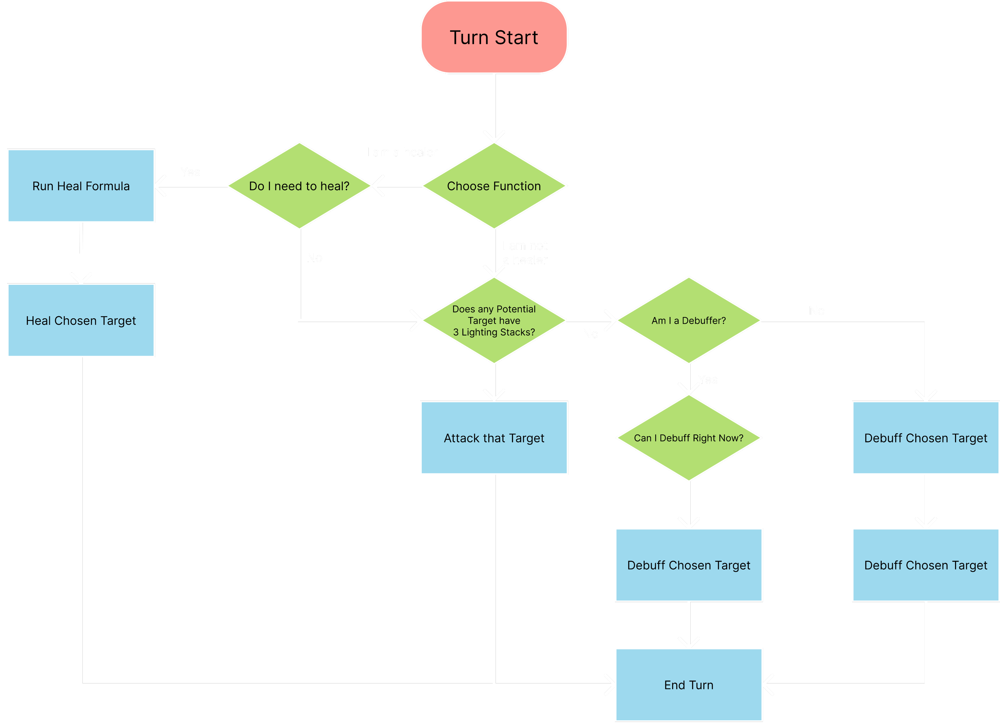

Amalgamage is a turn-based game built in Unreal Engine 5.6 for my Rapid Games Development unit at University.
For this unit we were put into teams of 6 or 7, and were tasked to create either a Turn-Based or Observational
Horror game within 8 weeks.
My group opted for a turn-based game, that features dynamic unit mechanics that allow party members to merge and
split during battle, to gain access to a new ability to utilise. I was responsible for designing and implementing
enemy AI, as well as resolving the majority of bugs to ensure stable gameplay. The project highlights a balance
of technical problem-solving and engaging combat design.
For Amalgamage we worked together to make a slightly more complex turn based system. We went through with a system
like this due to our main mechanic, Merge and Split. We had to work together to ensure that status effects carried
over to each slime when they merged and split apart.
We also had our turn order get affected by each slime's speed stat. Any changes in the speed stat, dynamically adjusted
the turn order to reflect the changes.
Turn order is handled by a manager which communicated with each slime on the field to instigate their turn and allow combat
to flow. This manager would handle all updates to the turn order in reaction to slime death, speed changes, merge and split actions.
Merge and Split are actions that only the player's slimes can take. These abilities are free actions, meaning that
they do not consume the turn. This allows players to freely merge and split as many times as they'd like during combat,
allowing them to transfer buffs between their slimes but also debuffs.
When merging, two slimes fuse together to make a new slime with a new unique ability. Their health values are added together,
both max and current. This slime also gets to act immediately.
When attacking as a merged slime, the damage dealt
is split evenly between the two elements used to create them.
When splitting, the two slimes return back to their original creators. Their max health returns back to their original values.
However, the current health is evenly split between the two. The slime that did not initiate the merge gets to act immediately,
allowing for strategic opportunity to allow the same slime to act multiple times per turn.
Paragraph 2 — Technical breakdown of project's core features explained.
I was solely responsible for the AI design and implementation of the AI of the enemies in Amalgamage. I decided it was
best if I kept it simple and I followed a simple flowchart for how enemies would act on their turn:

This is a very simple breakdown of how the AI flowed in game.
I decided to implement this through blueprints and functions in a simple flowchart rather than using a behaviour
tree or state tree. This is because the AI was designed to be as simple as possible so that I could focus on
balance, fixing bugs and implementing other features such as the debuffs and abilities of each slime.
Working with a team that was slightly lacking in technical capability allowed me to deepen my knowledge of complex interactions and allow others to focus on their strengths. This was the first time making an AI that had some complexity tied to it with the somewhat large amount of decision-making involved. The merge and split mechanic was something that required a lot of my attention as I had to interact with the turn order heavily. Making this a free action required a lot of my involvement to ensure that it worked as intended.